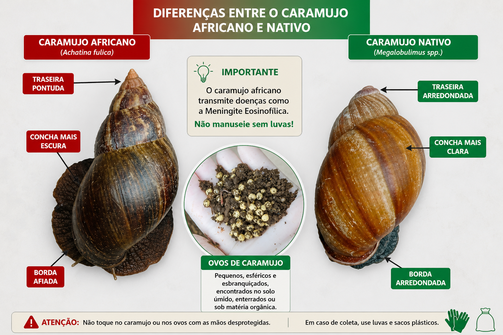
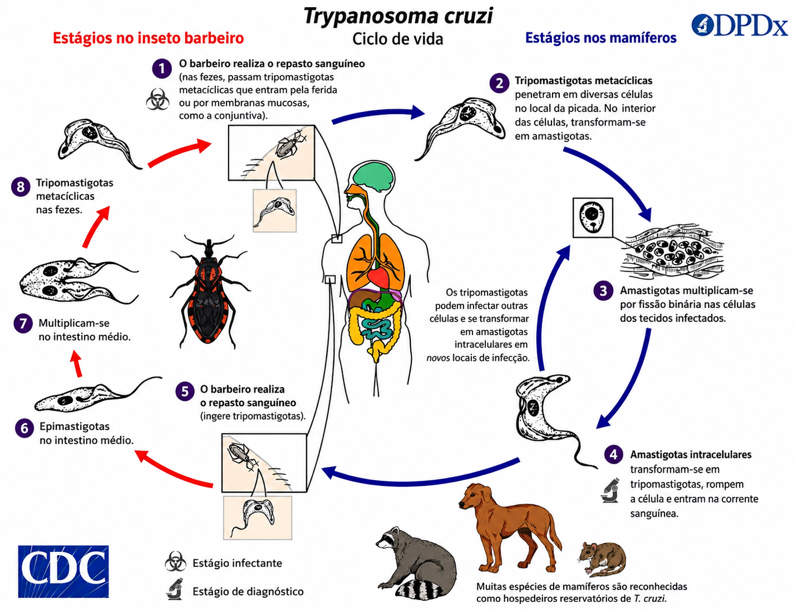
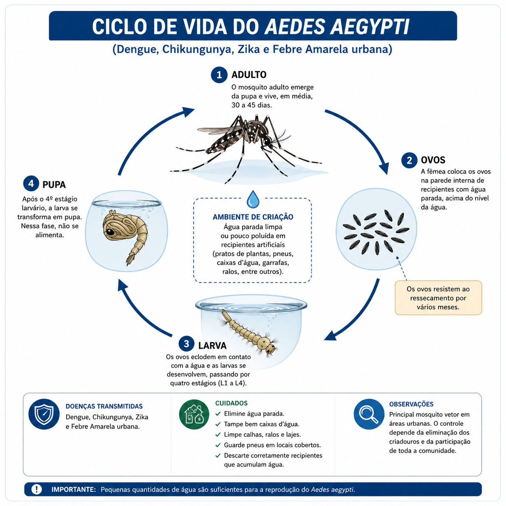
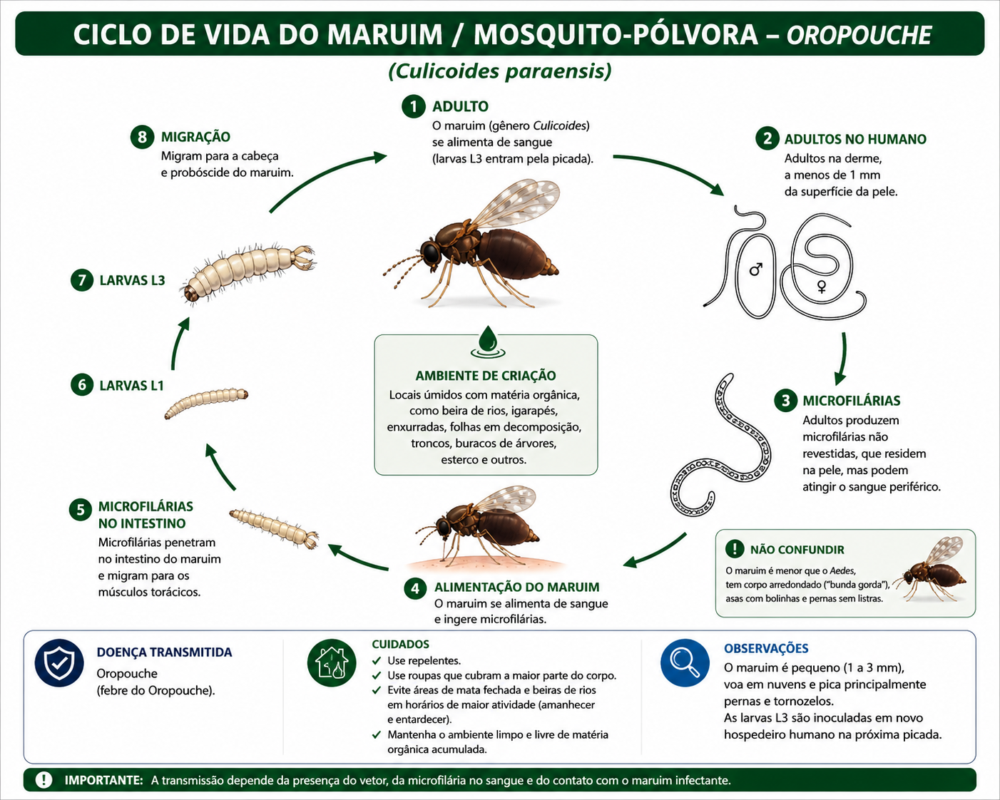
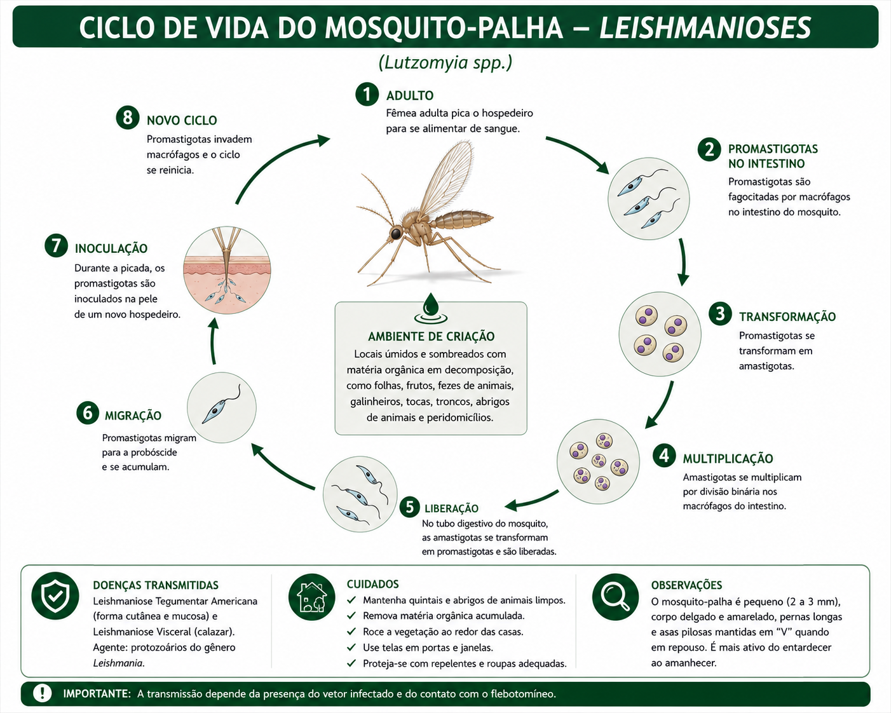
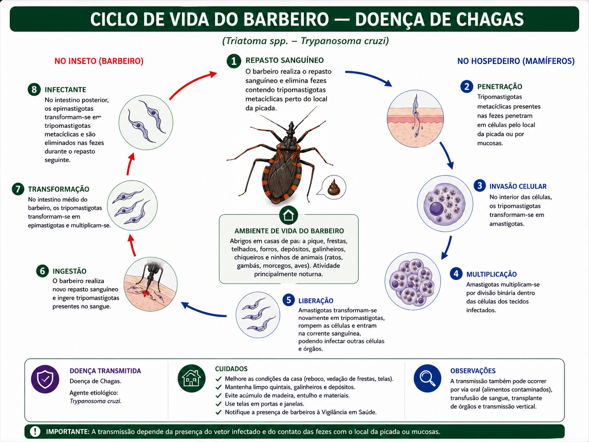
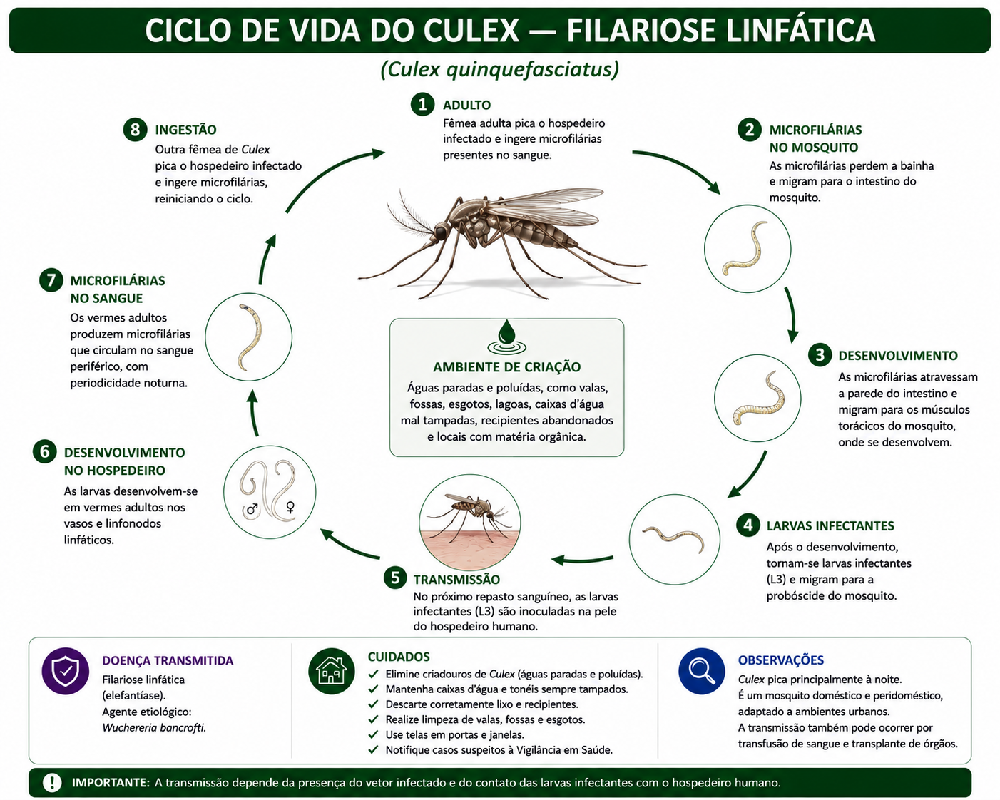
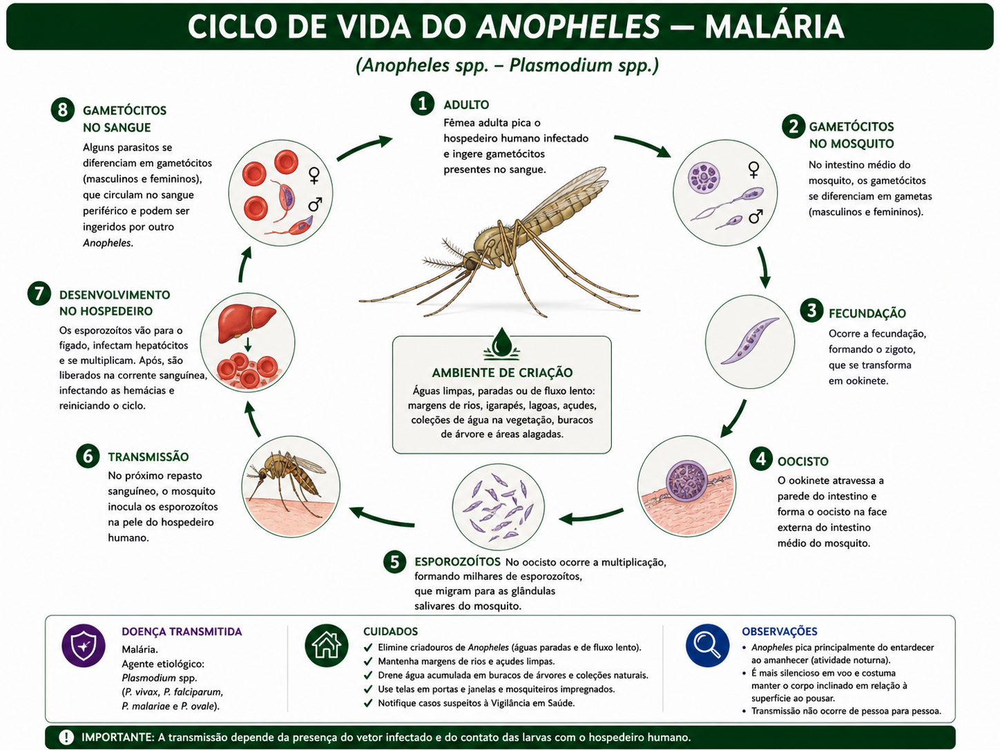

O que você vai fazer agora?
Selecione o módulo conforme a atividade ou dúvida durante as ações de controle vetorial e vigilância no território.
Vi isso → o que faço?
Escolha a situação encontrada no campo. O app direciona para a conduta mais adequada.
Quando comunicar a vigilância?
Evento de saúde pública é qualquer situação que foge ao padrão esperado e pode representar risco à saúde coletiva.
Comunique principalmente quando houver ocorrência de sinais ou sintomas semelhantes, aumento inesperado de casos em determinado local ou situações com potencial de transmissão.
- Várias pessoas doentes na mesma residência.
- Casos semelhantes na mesma rua ou bairro.
- Pessoas com sintomas parecidos em curto período de tempo.
- Ocorrências em instituições: escola, creche, ILPI, abrigo ou unidade coletiva.
Regra prática: se parecer que não é um caso isolado, comunique a vigilância.
DCV: (98) 99220-6557
COVEP: vigilanciaepidemiologica.sves@semus.saoluis.ma.gov.br
O que perguntar, observar e encaminhar
O ACE não diagnostica, mas identifica sinais de alerta, orienta a população e ajuda a conectar o morador à rede de saúde e à vigilância.
2. Arboviroses
Perguntar: febre recente, dor no corpo, dor atrás dos olhos, manchas na pele, dor nas articulações, náuseas ou vômitos.
Suspeitar: febre de início súbito associada a dor no corpo, cefaleia, exantema ou artralgia.
Sinais de alarme: dor abdominal intensa, vômitos persistentes, sangramentos, tontura/desmaio, sonolência, irritabilidade ou piora importante do estado geral.
3. Diarreia / MDDA
Perguntar: diarreia recente, vômitos, febre, presença de sangue nas fezes, mais de uma pessoa doente na casa, consumo de água/alimento suspeito.
Suspeitar: mais de um caso no mesmo domicílio, rua, bairro, escola, creche, ILPI ou outra instituição.
4. Síndrome Gripal (SG)
Perguntar: febre recente, tosse, dor de garganta, coriza, dor no corpo, falta de ar ou piora respiratória.
Suspeitar: febre + tosse ou dor de garganta, especialmente quando houver outros casos na família, escola ou comunidade.
5. Leishmaniose visceral
Perguntar: febre prolongada, emagrecimento, fraqueza, aumento da barriga, palidez, presença de cães sintomáticos ou área com ocorrência de mosquito-palha.
Suspeitar: febre persistente associada a emagrecimento, aumento abdominal ou fraqueza importante.
6. Leishmaniose tegumentar
Perguntar: ferida na pele que não cicatriza, lesão há semanas ou meses, lesão em mucosa, histórico de área de mata, quintal com matéria orgânica ou exposição ao mosquito-palha.
Suspeitar: úlcera crônica, geralmente com bordas elevadas, ou lesões persistentes em pele/mucosa.
7. Tuberculose
Perguntar: tosse por 3 semanas ou mais, emagrecimento, suor noturno, febre vespertina, cansaço e contato com pessoa com tuberculose.
Suspeitar: tosse persistente, especialmente com perda de peso e febre no fim do dia.
8. Malária
Perguntar: febre no final da tarde ou febre cíclica, calafrios, suor, dor no corpo, viagem ou procedência de área com transmissão de malária.
Suspeitar: febre + calafrios + vínculo epidemiológico com área de transmissão.
9. Hanseníase
Perguntar: manchas na pele, dormência, formigamento, perda de sensibilidade ao calor/frio/dor, fraqueza em mãos ou pés.
Suspeitar: mancha com alteração de sensibilidade ou sintomas neurológicos periféricos.
10. Outros sinais relevantes
Observar e orientar encaminhamento quando houver sinais incomuns ou agravamento do estado geral:
- Febre persistente sem causa aparente.
- Sangramentos, desmaio, sonolência intensa ou confusão mental.
- Falta de ar, piora respiratória ou lábios arroxeados.
- Inchaço persistente em membros, lesões de pele extensas ou feridas que não cicatrizam.
- Vários moradores com sintomas semelhantes no mesmo período.
11. Encaminhamentos
O ACE deve orientar procura da UBS sempre que identificar sinais compatíveis com agravo transmissível, doença de notificação ou situação que demande avaliação clínica.
- Casos com sinais de gravidade: orientar atendimento imediato.
- Casos suspeitos sem gravidade: orientar UBS de referência do território.
- Contatos de tuberculose e hanseníase: orientar avaliação na UBS.
- Suspeitas envolvendo animais/reservatórios: orientar fluxo específico e, quando aplicável, UVZ.
12. Comunicação de risco / Quando acionar a vigilância?
Evento de saúde pública é qualquer situação que foge ao padrão esperado e pode representar risco à saúde coletiva.
Comunique principalmente quando houver ocorrência de sinais ou sintomas semelhantes, aumento inesperado de casos em determinado local ou situações com potencial de transmissão.
- Várias pessoas doentes na mesma residência.
- Casos semelhantes na mesma rua ou bairro.
- Pessoas com sintomas parecidos em curto período de tempo.
- Ocorrências em instituições: escola, creche, ILPI, abrigo ou unidade coletiva.
Fluxo: ACE → DCV → Vigilância Epidemiológica/CIEVS e área técnica.
DCV: (98) 99220-6557
COVEP: vigilanciaepidemiologica.sves@semus.saoluis.ma.gov.br
Encontrou caramujo
Use este fluxo para decidir se a equipe coleta ou se deve orientar o responsável pelo imóvel.
Identificação visual

Use a imagem para apoiar a orientação ao morador e evitar confusão com espécies nativas.
Inseto com possível interesse em saúde pública
Não é todo inseto desconhecido que deve ser coletado. Avalie se há relação com evento de saúde pública.
Exemplos: picadas em moradores, vários insetos no mesmo local, doença ou reação associada, situação incomum, semelhança com vetor conhecido.
Mosquito / foco de água parada
Este fluxo decide a conduta. O cálculo de dose do larvicida fica em módulo separado.
Encontrou barbeiro
Priorize captura segura, registro do local e envio para identificação da espécie.
Ciclo da doença de Chagas

Instalar armadilha
Existem vários tipos de armadilhas e cada uma exige detalhamento técnico próprio. Este módulo continuará marcado como em construção até que todas sejam validadas.
Algoritmo operacional para ACE
Responda uma pergunta por vez. Abaixo de cada pergunta aparecem orientações específicas da etapa.
Algoritmo de ovitrampas
Monitoramento programado
Use para lembrar os pontos essenciais durante ações programadas pela DCV.
Checklist de campo
- Conferir planejamento da área e atividade prevista.
- Levar materiais, EPIs, fichas e identificação necessários.
- Registrar data, endereço, bairro, ponto visitado e achados.
- Comunicar situação fora do padrão à supervisão/DCV.
- Encaminhar amostras conforme fluxo técnico.
BTi — VectoBac WG
Dose adotada: 1 g para cada 10 litros de água. Use sempre orientação técnica da DCV.
Vetores e endemias
Conteúdo padronizado para orientação rápida do ACE e apoio à educação em saúde.
Aedes aegypti — Arboviroses

Doenças: dengue, chikungunya, zika e febre amarela urbana em condições específicas.
Ciclo: ovo → larva → pupa → adulto, em água parada limpa ou pouco suja, principalmente em recipientes artificiais.
Cuidados: eliminar água parada, tampar caixas d’água, limpar calhas/ralos, guardar pneus cobertos e descartar recipientes que acumulem água.
Maruim / mosquito-pólvora — Oropouche

Doenças: febre do Oropouche.
Ciclo: ovo → larva → pupa → adulto, associado a locais úmidos com matéria orgânica, como folhas em decomposição, áreas alagadiças e ambientes próximos a rios, igarapés e vegetação.
Cuidados: reduzir matéria orgânica acumulada, manter quintais limpos, manejar áreas úmidas e orientar proteção individual contra picadas.
Mosquito-palha — Leishmanioses

Doenças: leishmaniose visceral e leishmaniose tegumentar.
Ciclo: ovo → larva → pupa → adulto, geralmente em solo úmido, sombreado e rico em matéria orgânica.
Cuidados: limpeza de quintais, retirada de folhas, fezes e restos orgânicos, manejo de abrigos de animais, galinheiros e locais sombreados.
Barbeiro — Doença de Chagas

Doenças: Doença de Chagas, causada pelo Trypanosoma cruzi.
Ciclo: o barbeiro se infecta ao sugar sangue de hospedeiros infectados. A transmissão vetorial ocorre quando as fezes contaminadas entram em contato com a pele lesionada, local da picada ou mucosas.
Cuidados: não esmagar o inseto, capturar com segurança em recipiente fechado, registrar local da captura e encaminhar ao laboratório de entomologia.
Caramujo africano e caramujo nativo
Doenças: o caramujo africano pode estar associado à angiostrongilíase, incluindo meningite eosinofílica, quando contaminado por parasitas.
Ciclo: o risco ocorre pelo contato com o muco contaminado ou por ingestão indireta de larvas em alimentos, água ou superfícies contaminadas.
Cuidados: não manipular sem luvas, coletar também ovos visíveis, eliminar corretamente e manter quintais livres de entulho, folhas e matéria orgânica.
Culex — Filariose linfática

Doenças: filariose linfática em áreas com transmissão.
Ciclo: ovo → larva → pupa → adulto, geralmente em água parada poluída, valas, esgoto, fossas, lagoas e recipientes com matéria orgânica.
Cuidados: melhorar saneamento, limpar valas e fossas, evitar água suja acumulada, manter caixas d’água e tonéis tampados e reduzir resíduos.
Anopheles — Malária

Doenças: malária, causada por Plasmodium spp.
Ciclo: ovo → larva → pupa → adulto, com desenvolvimento em águas limpas, paradas ou de fluxo lento, em ambientes adequados ao vetor.
Cuidados: evitar exposição em áreas de risco, usar proteção contra picadas, manter margens e áreas alagadas sob monitoramento e orientar diagnóstico oportuno.
Controle químico com uso racional
Responda às perguntas antes de qualquer ação com UBV. Controle químico não substitui manejo ambiental.
UBV depende de avaliação técnica do cenário epidemiológico.
Situações em que UBV não é indicado
- Aumento de muriçocas sem evidência epidemiológica.
- Infestação de aranhas em áreas próximas a lagoas.
- Baratas, moscas, escorpiões ou outros animais não alvo.
- Problemas ambientais que exigem limpeza, drenagem ou manejo.
Exemplos comuns
Aumento de muriçocas: pode ocorrer em bairros próximos a lagoas, valas e áreas com água poluída. A resposta deve priorizar identificação do mosquito, avaliação ambiental, limpeza, drenagem e manejo da água.
Infestação de aranhas: pode ocorrer pelo aumento de insetos que servem de alimento. O problema é ambiental, não indicação de UBV.
Animais sinantrópicos
Conteúdo para orientar corretamente e encaminhar à UVZ.
Animais sinantrópicos vivem próximos aos seres humanos e se adaptam ao ambiente urbano, aproveitando alimento, abrigo e água.
- Animais domésticos errantes: cães e gatos.
- Morcegos: risco de raiva; não tocar.
- Pombos: acúmulo de fezes e risco respiratório.
- Roedores: leptospirose e contaminação ambiental.
- Baratas e moscas: contaminação de alimentos.
- Escorpiões: acidentes por picada.
Contatos de Vigilância — São Luís
COVEP — Coordenação de Vigilância Epidemiológica
Av. dos Franceses, s/nº — Alemanha, São Luís/MA
2º piso — Sala 6
vigilanciaepidemiologica.sves@semus.saoluis.ma.gov.br
DCV — Divisão de Controle Vetorial
DCV/COVEP/SVES
Av. dos Franceses, s/nº — Alemanha, São Luís/MA
2º piso — Sala 7
(98) 99220-6557
UVZ — Unidade de Vigilância em Zoonoses São Luís
Estrada de Ribamar, nº 5 — Forquilha (antes do Eletro Mateus)
(98) 99164-9301
uvz.sves@semus.saoluis.ma.gov.br
@uvzsaoluis
SVES
Av. dos Franceses, s/nº — Alemanha, São Luís/MA — CEP 65036-281
(98) 99174-7899
sves@semus.saoluis.ma.gov.br
Guia de Apoio à Vigilância de Vetores — São Luís/MA
Ferramenta pública, gratuita e sem login, desenvolvida para apoiar a atuação dos Agentes de Combate às Endemias e profissionais de saúde nas ações de vigilância e controle de vetores.
Giuliane Ferreira Lopes dos Santos
Coordenação de Vigilância Epidemiológica – COVEP/SVES/SEMUS São Luís-MA.
Enfermeira e Sanitarista. Mestre em Saúde Coletiva pela Universidade Federal do Maranhão (UFMA). Especialista em Epidemiologia de Campo (EpiSUS Intermediário – Fiocruz). Certificada em Epidemiologia para Gestores de Saúde pela Johns Hopkins University. Atua como Coordenadora de Vigilância Epidemiológica de São Luís desde 2022.
- Marcos Vinícius Serrão Viana — Divisão de Controle Vetorial – DCV/COVEP/SVES
- Pollyanna da Fonseca Silva Matsuoka — Divisão de Controle Vetorial – DCV/COVEP/SVES
- Julio Cézar Maia Pereira — Divisão de Controle Vetorial – DCV/COVEP/SVES
- José de Ribamar Nunes Pereira — Divisão de Controle Vetorial – DCV/COVEP/SVES
- Elaine Cristina Alves da Silva — Divisão de Controle Vetorial – DCV/COVEP/SVES
- Tercilândia de Cássia Rodrigues — Divisão de Controle Vetorial – DCV/COVEP/SVES
- Maria do Socorro da Silva — PMCA/DT/COVEP/SVES
- Neusa Maria Gonçalves Amorim — PMCT/DT/COVEP/SVES
- Sheila de Jesus Pereira do Nascimento — PMCE/DT/COVEP/SVES
- Yasminy Mylene Santos Caldas — PMCH/DT/COVEP/SVES
- Sônia Maria Ferreira da Silva Serra — PMCH/DT/COVEP/SVES
- Leila Maria de Alencar Barros Fonseca — PMVVR/DT/COVEP/SVES
BRASIL. Ministério da Saúde. Guia de Vigilância em Saúde. Brasília, DF: Ministério da Saúde, última edição disponível.
BRASIL. Ministério da Saúde. Diretriz Nacional para Atuação Integrada dos Agentes de Combate às Endemias e Agentes Comunitários de Saúde no Território. Brasília, DF: Ministério da Saúde, 2025.
BRASIL. Ministério da Saúde. Manual de Proteção para Agentes de Combate às Endemias. Brasília, DF: Ministério da Saúde.
BRASIL. Ministério da Saúde. Diretrizes nacionais para prevenção e controle das arboviroses urbanas: vigilância entomológica e controle vetorial. Brasília, DF: Ministério da Saúde, 2025.
Referências específicas — módulo Armadilhas/Ovitrampas
- BRASIL. Ministério da Saúde. Secretaria de Vigilância em Saúde e Ambiente. Nota Técnica nº 3/2025-CGARB/DEDT/SVSA/MS. Implementação da estratégia de Vigilância Entomológica de Aedes aegypti e Aedes albopictus com armadilhas ovitrampas para o território nacional.
- LIMA, J. B. P. Metodologia para amostragem de Aedes aegypti por meio de armadilhas de postura (ovitrampas). Instituto Oswaldo Cruz/Fiocruz; Ministério da Saúde.